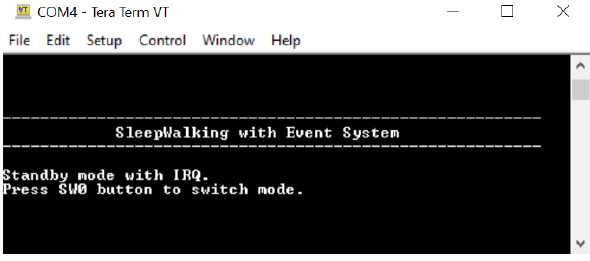
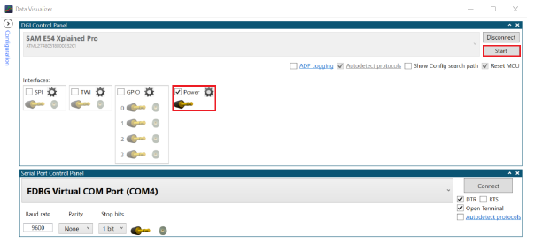

SleepWalking Application Demo on SAM E54 Xplained Pro Evaluation Kit
Description:
This application demonstrates SleepWalking using the Event System. The application uses an ADC with a Window Monitoring feature in Standby mode for the following use
cases:
- Standby mode with Interrupts (IRQ)
- Standby mode with Event System (SleepWalking)
On power up, the application is in STDBY_IRQ_MODE. It is possible to switch from STDBY_IRQ_MODE to
STDBY_EVSYS_MODE by pressing the switch button (SW0) embedded on the SAM E54 Xplained Pro board. The
application wakes up from Sleep mode and enters into ACTIVE_MODE when the embedded light sensor on the I/O1
Xplained Pro extension kit is covered.
Modules/Technology Used:
- Peripheral Modules
- ADC
- CMCC
- DMAC
- EVSYS
- NVMCTRL
- PM
- RTC
- SERCOM
- SUPC
- SYSTICK
- STDIO Library
Hardware Used:
This project has been verified to work with the following versions of software tools:
Setup:
- Ensure jumper to measure MCU current is set to MEASUR
- Ensure jumper to measure I/O current is set to BYPASS
- Connect the I/O1 Xplained Pro Extension Kit to the XPRO connector 2 on the SAM E54 Xplained Pro Evaluation Kit
- Connect the micro USB cable from the computer to the DEBUG USB connector on the SAM E54 Xplained Pro Evaluation Kit
Programming binary/hex file:
- If you are not interested in installing development tools. The pre-built binary/hex file can be programmed to the target
Steps to program the hex file using MPLAB X IPE
- Open MPLAB X IPE
- Select Device has "ATSAME54P20A"
- Power the SAM E54 Xplained Pro Evaluation Kit from a Host PC through a Type-A male to Micro-B USB cable connected to Micro-B port
- Once Power cable is connected, "EDBG" hardware tool is identified as a programmer
- Browse to hex file (sleepwalking_hex_file.hex)
- Click on program button. The device gets programmed in sometime
- Follow the steps in "Running the Demo" section below
Programming/Debugging Application Project:
- Open the project (sleepwalking\firmware\sam_e54_xpro.X) in MPLAB X IDE
- Ensure "EDBG" is selected as hardware tool to program/debug the application
- Build the code and program the device by clicking on the "make and program" button in MPLAB X IDE tool bar
- Follow the steps in "Running the Demo" section below
Running the Demo:
- Open Tera Term or any equivalent serial communication tool
- In the Tera Term: New Connection window, select the Serial Port number allocated to the connected SAM E54
- Configure the Tera Term Serial port interface to 115200 speed
- Reset the board by pressing the reset button. The application will start by displaying the following message on the serial terminal.
- 
- Open the standalone Data Visualizer tool
- In the Data Visualizer window, select SAM E54 Xplained Pro, and then click Connect
- Once the protocols are displayed, select the protocol Power and then click Start
- 
- The Data Visualizer will display the power consumption details in the Power Analysis window
- When the application starts, the device will run on Standby with IRQ mode. The data analyzer shows the power consumption of the device when the CPU is woken up every 10 milliseconds by an RTC Compare ‘0’ interrupt to start an ADC conversion
- Using the SW0 push button, it is possible to change the application mode from Standby with IRQ to SleepWalking. In this mode the CPU is woken up only when an ADC window monitoring interrupt occurs. The data analyzer shows the power consumption of the device when running in Standby with the Event System (SleepWalking)
Revision:
- v1.0 released demo application